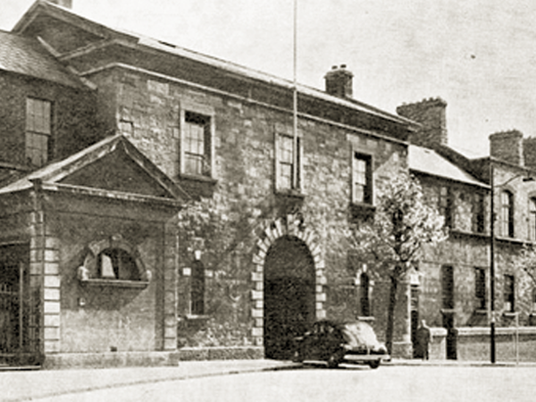

The South Dublin Union, in which Eamonn Ceannt was the commandant, is now St James’ Hospital. Two miles west of the GPO, some 120 Volunteers made up the 4th Battalion here. The Union was built as a workhouse in the middle of the 19th century. In 1916 it housed about 3,200 of the poor and elderly, as well as a doctors and nurses.
The Union — consisting of living quarters, an infirmary, a hospital and churches on 50 acres — was in a strategic position as it overlooked Kingsbridge (Heuston) railway station to the north and controlled the route from Richmond Barracks and the Royal Hospital (military headquarters) leading to the city centre. From here, Ceantt deployed his men: Captain Seamus Murphy to Jameson’s Distillery in Marrowbone Lane to the south east; Con Colbert to Watkins’ brewery in Ardee Street to the east; and Captain Thomas McCarthy to Roe’s Distillery in Mount Brown.
The Union saw intense fighting early in the week, but held out despite heavy casualties on both sides. News of the surrender did not reach Ceannt until Sunday.
